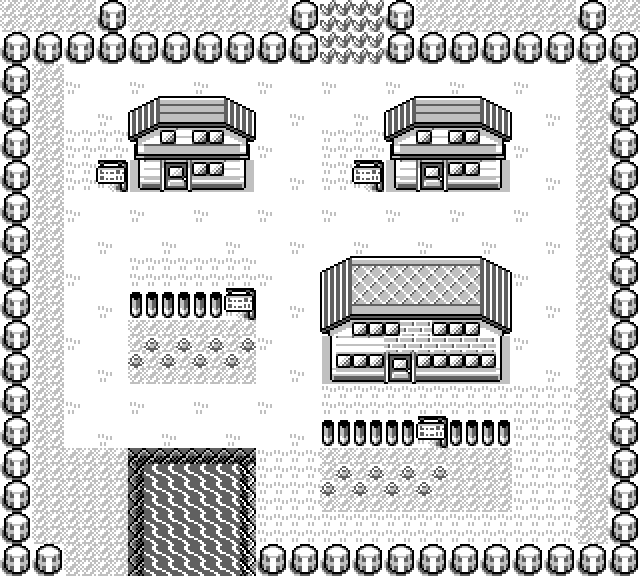

Project · Image extraction
PixelGB
High-quality pictures extracted from a Game Boy cartridge and checked against the console that drew them. Not reconstructed from a disassembly's data files — photographed. PixelGB puts your cartridge in a cycle-accurate emulator, walks the game to each of its 226 maps, and lets the game load its own tileset, copy its own art into video RAM, apply its own palette and draw its own screen. Then it renders the same map a second time from the map data and compares the two pixel for pixel.
One run of pixelgb verify against a Pokémon Blue cartridge (header title
POKEMON BLUE, global checksum $9D0A). Every number on this
page came out of that run.

Standing on vjeux's shoulders
The thing to beat is vjeux's Pokémon Red/Blue world map — a single 7200×7200 PNG of the whole of Kanto with the interiors placed and the connections drawn. It is genuinely good, it is the reason this project exists, and it does one thing PixelGB does not: it produced one enormous, beautiful, finished image anybody can open in a browser.
It was built by reconstructing the world in a browser canvas from
pret/pokered's data files. The problems it had to solve are exactly the
problems that reconstruction implies — and every one of them dissolves if you are
holding the console instead of standing outside it:
| The problem | How a reconstruction solves it | What PixelGB does |
|---|---|---|
| Which tileset a map uses (Route 23 needs "plateau") | phased rendering | the game loads its own |
| Placing interiors near their doors | shortest-path search over candidate spots | walk through the door and photograph what is there |
| Sprites are stored facing left only | flip them in canvas | the picture processor drew them |
| White is used as transparency; there is no alpha | remap the colours | the picture processor composited them |
| Connection lines crossing objects | A* over cost-weighted tiles | the cartridge's connection records say where each map goes |
That is not a criticism of the original. It is a browser page that renders in a browser. But every row in the middle column exists because the world is being rebuilt, from the outside, by something that is not the game.
What "high quality" honestly means here
The captain asked for images that are "absolute HIGH quality of retro world", and the honest reading of that is worth writing down, because the dishonest reading is easy.
The source art is 8×8 tiles in four shades. PixelGB cannot invent detail and does not try. There is no upscaler, no smoothing, no "AI enhancement", nothing that guesses at what a pixel might have been. High quality means provably correct and cleanly scaled — 1×, 2×, 4×, 8×, every output pixel a perfect square of one source pixel — and it means every pixel is traceable to a byte in your cartridge.
That is enforced rather than promised. There is exactly one scaler in the program, it is nearest-neighbour at whole-number factors only, and every image goes through a categorical guard on the way out: no colour may appear in the output that was not in the source. A Game Boy map has four shades in it and nothing else may appear. A fifth colour is an error that stops the run.
Why that guard is not paranoia
TerminalGB was bitten by exactly this. A terminal
rendering library's half-block encoder had FilterType::Triangle hard-coded
into one code path, and quietly put 271 distinct colours into a four-shade
picture. Nothing warned; it just looked slightly wrong. A family that has been
bitten once writes the assertion down.
Getting there: two facts and one released D-pad
Every address PixelGB uses comes from AtlasGB's Pokémon Red/Blue atlas, and each constant in the source names the symbol it came from. Two of those facts are what make the capture path possible at all.
Writing a map number into wCurMap crashes the game. The
whole map header sits underneath it, so the engine ends up reading the new map's blocks
through the old map's pointers. The safe route is wWarpEntries:
redirect one of the current room's own warps at the target map and walk the player into
it, and the engine loads the destination header itself. So PixelGB plays the opening,
saves the machine's state the moment it stands on a real map, and for each of the 226
maps rewinds to that moment, points one warp at the target and walks in. Everything after
that is the game's own: LoadMapHeader, the tileset copy into video RAM, the
palette, the objects, the screen.
And then one line turned out to be worth a hundred maps.
Let go of the D-pad the instant the map changes.
The single most important line inwarp_to
A door is a warp on both sides. You arrive on the doormat, and a player still holding the direction takes one more step and walks straight back out. Holding for a fixed number of frames reaches every open map in the game and almost no building. Holding: 113 maps photographed. Releasing on arrival: 216.
The second one is stranger. Shop clerks talk. Several maps put a text box
up the moment you arrive, and Generation 1 does that by parking the window layer at
WY = 0 — which means the window covers the entire screen and the map
is drawn through it. An earlier version of the comparison excluded "wherever the
window is", the way it excludes sprites, and so masked the whole picture: 31 maps went
from exact to inconclusive and two to no-alignment,
with nothing visible in the report to say why. The right answer was not to subtract the
text box but to dismiss it, the way a player does — press B until the window is off-screen
again, requiring several consecutive clear checks because the window parks off-screen for a
few frames between two boxes of one conversation.
That failure is recorded rather than fixed and forgotten, because it was silent and looked like a tolerance problem when it was a modelling one.
The four checks, in increasing order of what they prove
| Check | What it holds up against what | Result |
|---|---|---|
| header | the header the engine loaded, against the one PixelGB read from the same bytes | 226 / 226 agree |
| size | the cartridge, against pret/pokered's independently declared sizes | 226 / 226 agree |
| tileset art | the graphics in video RAM, against the cartridge's, for the tiles each map draws with | agree but for animation |
| live blocks | wOverworldMap, against the cartridge's block list | 204 identical, 22 script-changed |
| pixels | the frame the picture processor drew, against the composed map | 212 exact, 3 script-changed, 11 unresolved |
For the pixel comparison, the alignment is found, not assumed. PixelGB searches a small neighbourhood around where it thinks the camera is and reports the offset at which the two agree. Computing the alignment would test our own arithmetic; finding it is evidence. Two kinds of pixel are excluded — ones an object may have covered, and ones outside the map proper, where the console is legitimately showing a neighbouring map — and the manifest records how many were actually compared.
The palette is learned too. PixelGB recomputes each background pixel from video RAM the way the picture processor would, reads the pixel the processor actually produced, and requires every pixel of a given two-bit colour number to have come out the same. Disagreement stops the run rather than being averaged away.
Three findings, none of them defects
The engine animates two tiles, and PixelGB measured which
On 46 maps, video RAM's copy of the tileset differs from the cartridge's — and in every one of those cases the differing tiles were also observed changing in video RAM while the map sat still. Nothing but an animation does that: the map is not scrolling, no warp is happening, and the art was copied in once when the map was entered. It is the flower and the water.
PixelGB carries no list of "the animated tiles". It watches for two seconds and reports
what moved. The consequence shows up directly in the numbers: compared against the
cartridge's static art — what a standalone pixelgb render produces —
the same comparison gives 193 exact instead of 212, and that 19-map
difference is the animation, frozen.
Twenty-two maps rewrite their own blocks
Silph Co., the Pokémon Mansion, the Rocket Hideout, two gyms and two of the Elite Four's rooms have squares where the engine's live block map differs from the cartridge's, because a map script replaced them — doors and lifts that are not in the state the cartridge stores them in.
Here the composed render is right about the cartridge and the photograph is right
about the console, and neither is wrong. Three of those maps had a changed square
on screen when the shutter went. PixelGB checks that every differing pixel falls inside a
square the engine had already changed, and calls the result script-changed
with the squares and the before-and-after block ids in the manifest. It does not call
either picture a failure — and it does not quietly widen the tolerance either: one
differing pixel outside those squares and the verdict goes back to a plain disagreement.

script-changed maps. Three of
its squares differ between the cartridge's stored block list and what the engine's live
block map held when the room was entered: (8,3),
(10,8) and (13,13), each
$0E → $2D. This render is right about the cartridge; the
photograph taken in the same run is right about the console. Neither is a failure.
Twenty-two of the cartridge's 248 map ids are not maps
The map table has to be a fixed length, so the spare ids' header pointers land on whatever bytes happen to follow. Read as a header, one of them is a plausible 147×132 map with 248 warps — exactly the sort of thing that renders without complaining and is entirely wrong.
Nothing in the cartridge marks them. So the witness is pret/pokered, which
declares them 0×0, and PixelGB says where that claim came from rather than pretending it
read it off the ROM. That leaves 226 real maps — and every one of their sizes, read from
the cartridge, agrees with pokered's independent figure. Two sources, no disagreements.
The eleven that did not agree
Ten of them have nowhere to arrive. The capture path works by redirecting a warp, and a warp names a destination warp on the far side; these maps have none, so the engine reads an arrival coordinate out of an empty list and the camera comes to rest outside the map. The screen is not a picture of the map at all. The header still loads correctly, so the first three checks pass — only the photograph is unusable.
14 ROUTE_3 20 ROUTE_9 24 ROUTE_13 25 ROUTE_14 28 ROUTE_17
30 ROUTE_19 32 ROUTE_21 35 ROUTE_24 239 TRADE_CENTER 240 COLOSSEUM
118 HALL_OF_FAME 6500 of 13824 pixels differdocs/verification.md, named rather than
rounded away. Trade Center and Colosseum are link-cable arenas and are unreachable in
single-player at all.
The detail that makes this an honest result rather than a convenient one: it is decided by what the comparison found, not refused in advance. Route 1 also has no warps, lands somewhere sensible anyway, and verifies exact. Filtering every warpless map out up front would have been tidier and would have thrown that picture away.
The eleventh is the Hall of Fame, and its failure is a limit of the capture rather than a disagreement between the two renderings. Walk in and Oak starts talking, and his script is not one you can press B through — it inducts the party. PixelGB presses B up to eighty times and requires four consecutive clear checks before photographing, which is what rescued every shop and Pokémon Center where a clerk greets you on arrival. This one still has a text box up, so it is counted on its own rather than folded into either category.
Where the two renderings do still disagree, the run writes both pictures and a map
of the comparison itself into disagreements/ — white where they agreed, black
where they did not, mid-grey where nothing was compared — so the next person can look
rather than guess.
The topology reaches maps the camera cannot
The photography limit is about the camera, not the load. By the time the camera is
lost, LoadMapHeader has already run and the map's width, its connection flags,
its four connection headers and its warp table are all populated and correct. So
pixelgb topology observes all 226 maps, including every one
that cannot be photographed.
Every field is read off a machine that has loaded the map. Reading the static map header is a claim about bytes; reading the loaded map is what the game did. The static parse still runs — as an independent witness, never as the source. 226 of 226 observed, 223 agreeing with the header on every field.
The three that differ are the Celadon Mart, Rocket Hideout and Silph Co. lifts, which point their exit warps back at the room you stepped in from. The observation is true of the visit; the header is true of the cartridge; the file says so rather than picking a winner. And the rule that keeps that from becoming a licence to explain anything away: a warp that has moved is never explained away, because nothing about arriving relocates a warp.
Where the cartridge stops and a decision starts
pixelgb atlas puts all 226 maps in one 6848×7024 image, and two different
kinds of placement live in it. Every PNG's stamp says which is which, because the honest
distinction is the whole value of the picture.
Outdoors is the cartridge's. The 36 connected maps go where the connection records put them — exact arithmetic, no search. A connection record names one block twice, once in the neighbour's block data and once at where the engine copies it, and one block in two frames is an exact offset. Every chain of connections that arrives at a map puts it in the same place: zero placement disagreements.
Indoors is a presentation choice, but the door is not. An interior has no connections at all — the cartridge says which door leads to it and nothing about where the room is. So the rule is one sentence: a building is drawn adjacent to the map its door is in, on the side that door is on, in line with it.
What follows from that is a long argument settled by measurement rather than taste, and the headline is the room-to-door distance over the rooms both layouts can measure:
| Layout revision | Door distance mean / median |
Nearer another region's door |
Out of door order |
|---|---|---|---|
| Before the whole-map review | 715 / 456 px | 92 of 169 | 16 of 71 |
| After it | 599 / 383 px | 85 of 184 | — |
| After three reported faults | 503 / 350 px | 79 of 184 | — |
| Doors' order as the primary key | 494 / 305 px | 72 of 184 | 0 of 71 |
The interesting part is the last column. Two buildings whose street doors are on the same side of the same town must be drawn in the doors' own order along that side. Added as an ordinary term in the distance cost, that loses every time: an inversion the eye reads at a glance is worth only a few pixels of nearness, and a building will buy the pixels — which is how Cinnabar's gym came to be drawn below the two shops whose doors are eight tiles below its own. The weight that makes it win was measured, not picked: at 4 the cartridge still has five pairs the wrong way round, at 8 it has none, and from 8 to 16 the layout does not move at all.
And "not the wrong way round" turned out to be a loophole the search will find. With equality free, seven pairs came to rest exactly level — Saffron's gym and mart among them, the very pair that was complained about. Making the ordering strict cost nothing: same mean, same median, same sheet.
One warp in the cartridge is not a door
Celadon City's ninth warp, tile (39,19), drops you into map 136 — the department store's fifth floor. That floor's own three warps lead to the roof, the fourth floor and the lift; none of them leads back to the street. Read as a street door, it filed one floor of the store 254 tiles from the other six, on the opposite side of the city.
So an outdoor warp is taken as the way in only when the room it reaches has a warp back to "the map you came from". Map 136 is the only map in the cartridge that fails that test, and with the rule in place the store lands as one column of seven.
Victory Road looks like the same bug and is not. Route 23 has two street doors of its own, into 1F and into 2F, and both rooms walk back out. The route is 20 tiles wide, so those doors are genuinely on opposite sides of it and the two halves file either side. The community's hand-authored atlas bundles them; the cartridge does not, and the cartridge wins.
A building that will not fit comes apart at one of its own doors
The S.S. Anne is entered through Vermilion's dock rather than off the street, so the dock, the ship and its eleven rooms are one building — and a twelve-room block wants about a million square pixels of one rectangle, which does not exist within two screens of Vermilion. Every arrangement of it as one block put it beyond Route 12, further from its own town than anything else in the cartridge.
It was not mis-assigned and the search was not failing. Measured against the finished sheet, where it stood was the nearest place a single rectangle of that size would go. So a building may be cut at one of its rooms, and the rooms behind that door become a wing, placed by the same rule said about a different map — adjacent to the map its door is in, on the side that door is on, in line with it — where "the map" is now a room of its own building.
What is not negotiable, through any of that, is that a panel never covers walkable world or another panel. The finished rectangles are checked and an intersection fails the render. That assertion is worth more than the rule it guards, because it is what makes the next change to the layout safe.

Every PNG says what it is, and carries no clock
Each file's metadata records the repository, the tool version, what the picture is, the cartridge's identity by title and checksum, the palette, the scale, the licence — and the gate's verdict with a short reason. That last one is the point: an image that has travelled away from the report still says which side of the 215-of-226 line it is on.
Nothing that varies between two runs may go in. No timestamp, no hostname, no username, no path. The provenance builder refuses keys that read like one and returns an error rather than writing the file, and an integration test renders the same map twice, a second apart, and compares bytes. It records the tool version, never a commit hash — an image is published by the commit whose hash it would have to contain.
Two smaller rules in the same spirit. Metadata values are Latin-1, so every value written is plain ASCII — "Pokemon", not "Pokémon" — because a silently mangled character is a file that lies about itself. And the Game Boy Color rendering is simply not published: a Color console running a cartridge with no Color support applies a compatibility palette chosen by its boot ROM, that boot ROM is Nintendo's and is not here, and inventing the palette to fill the directory would be precisely the reconstruction this project exists to avoid. The path is where it will go; supply a boot ROM and the tool writes it.
Where these numbers come from
Every figure on this page is from one run of pixelgb verify against a Pokémon
Blue cartridge (header title POKEMON BLUE, global checksum $9D0A),
written up in the project's own docs/verification.md and reproducible with
pixelgb verify --rom /path/to/your.gb --out out --scales 1,2,4,8. The layout
measurements come from docs/atlas-review.md, which records them over the whole
cartridge and per region.
The three map images here are from the published set under images/ in the
PixelGB repository — rendered by the tool from the maintainer's own cartridge, and copied
into this site byte-for-byte apart from PNG re-compression (verified pixel-identical, still
four colours). PixelGB ships no cartridge and no cartridge data; it reads a cartridge you
supply and writes pictures where you tell it to.
The addresses PixelGB reads come from AtlasGB's evidenced Pokémon Red/Blue atlas, and the emulator underneath is TerminalGB, pinned to a revision. Pokémon, Game Boy and Nintendo are trade marks of their respective owners; this is a study of extraction and verification, not a distribution of game content.